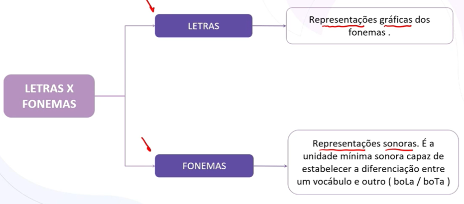
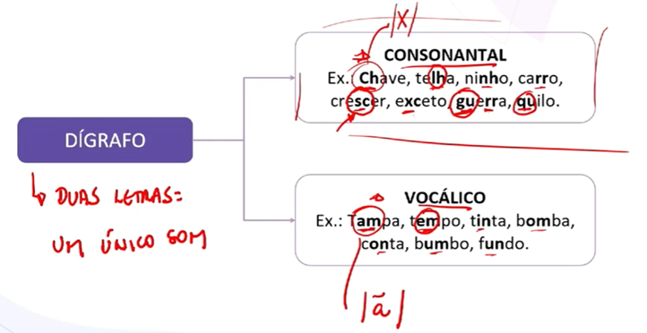
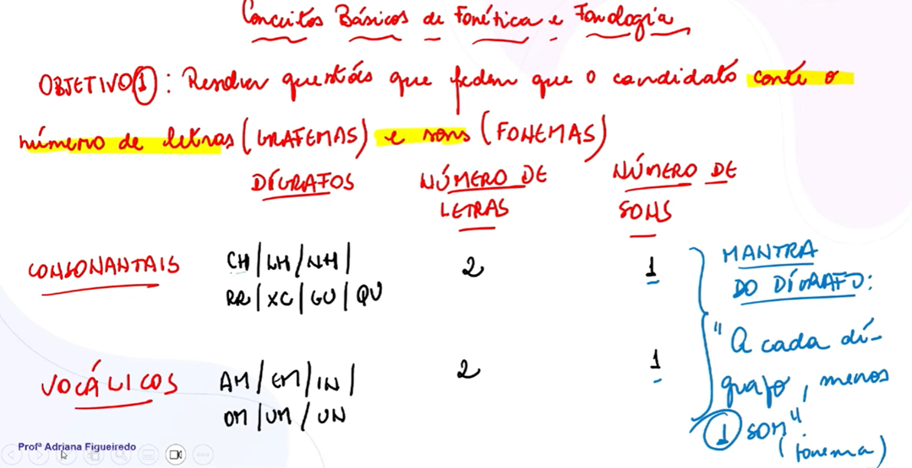
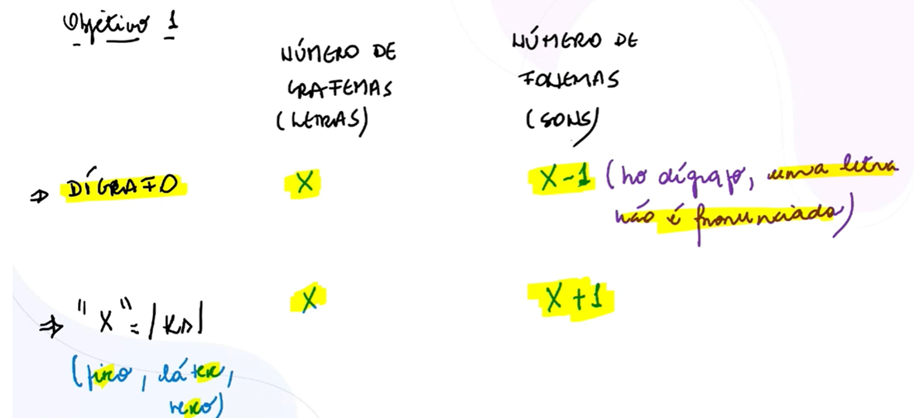
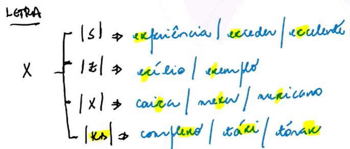
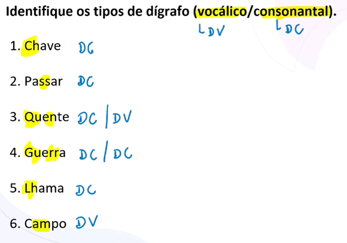
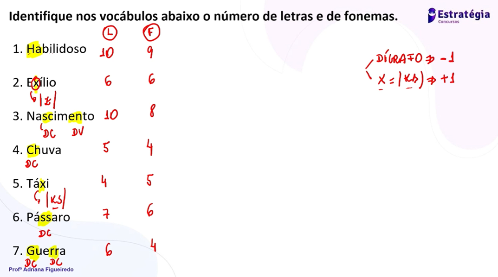

Professora: Adriana Figueiredo
A base para acertar qualquer questão é a distinção clara:

Dígrafo = 2 letras, 1 som.
O "Mantra do Dígrafo": A cada dígrafo, temos menos 1 fonema em relação ao número de letras.


Consonantais: ch, lh, nh, rr, ss, sc, sç, xc, xs, qu, gu (somente se o "u" não for pronunciado).
Vocálicos: Vogal + M ou N na mesma sílaba (am, an, em, en, im, in, om, on, um, un).


A letra "X" é uma "camaleoa" da fonética e pode representar diversos sons:

Para o concurso, memorize esta regra de ouro para a contagem:

Exílio: não é dígrafo. Não é porra nenhuma. O X simplesmente tem som de Z. 6 letras, 6 fonemas
Táxi: não é dígrafo. Mas o X tem som de KS e então é chamado de dífono. 4 letras, 5 fonemas.